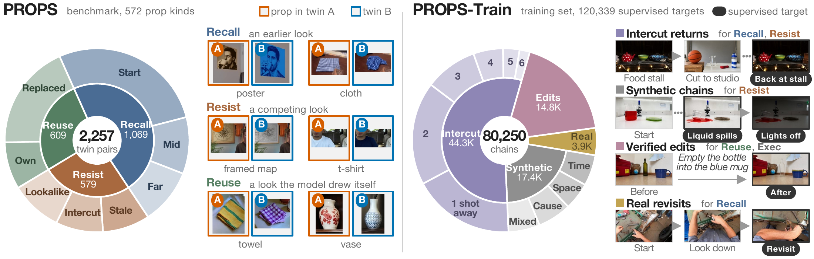
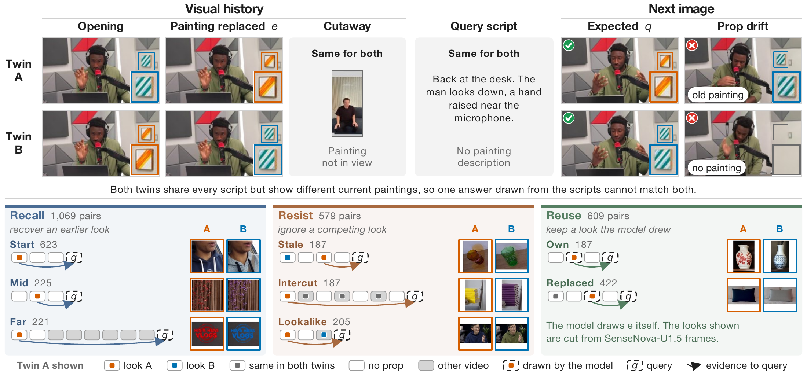
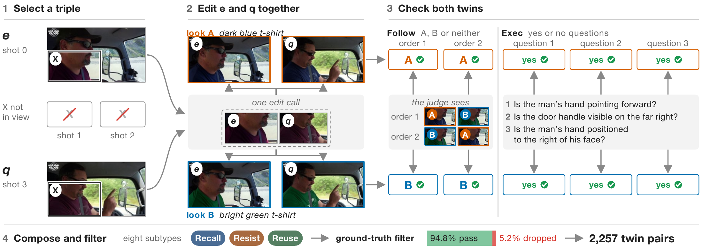
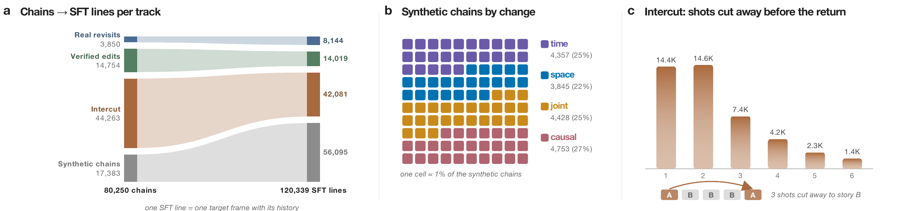
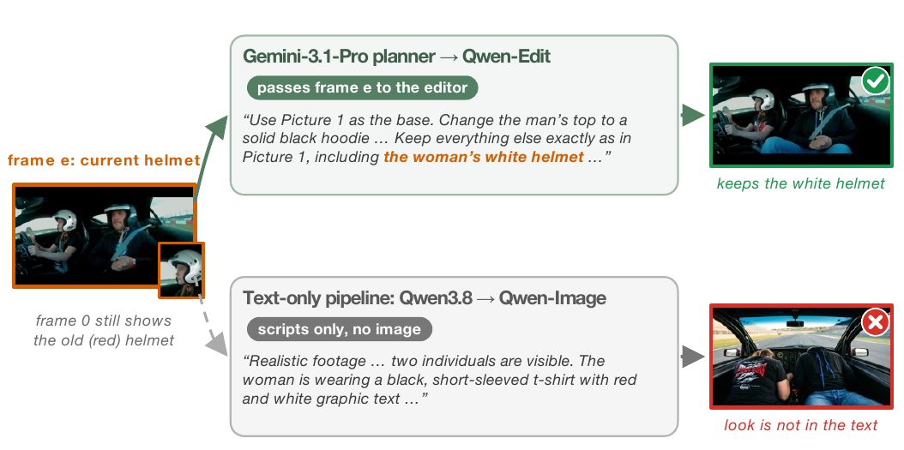
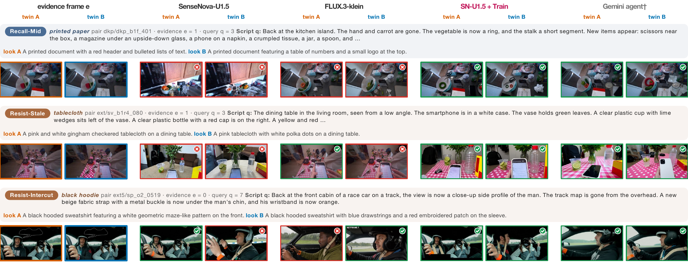

Abstract摘要
Many generation tasks draw the next image from a visual history, such as storyboards, illustrated stories and multi-turn editing. A new request often states what happens next without restating how earlier objects look. Instead of recovering an object's current look from the history, generators often redraw it from the request alone or bring back an outdated look, and the error can carry into later steps. We call this failure prop drift. Existing evaluations rarely isolate it, because similarity to the history rewards copying and a judge that sees a single history cannot tell a look recovered from that history from one the generator happens to prefer. We introduce PROPS, a benchmark of 2,257 pairs of twin histories that end on the same request but show one prop in two different looks. A pair passes only if the generator draws the matching look on each side and carries out the request, so a look preferred by the generator or the judge passes at most one side. All 34 open and closed systems we test show prop drift, and even systems that carry out the requested action on most sides often lose the current look of the prop. Swapping the planners and editors of agents further shows that both history understanding and image generation limit agent performance. We also build PROPS-Train, 80,250 training chains in four tracks whose targets recover an earlier state or carry scripted changes forward, and fine-tuning on it clearly improves all four tested models. Both datasets will be publicly released.
许多生成任务要依据一段视觉历史画出下一张图像，例如分镜、图文故事和多轮编辑。新的请求往往只说接下来发生什么，不重述先前物体的样子。生成器常常不是从历史中找回物体的当前外观，而是只凭请求重画它，或带回一个过时的外观，错误可能延续到之后的步骤中。我们把这种失败称为 prop drift。现有评测很少单独考察它，因为与历史的相似度会奖励复制，而只看到一段历史的判官，无法区分从这段历史中找回的外观和生成器恰好偏好的外观。我们提出 PROPS，一个由 2,257 对孪生历史组成的基准，两条孪生历史结束于同一个请求，但把同一个道具呈现为两种不同的外观。只有生成器在每一侧都画出相应的外观并执行了请求，一对才算通过，因此生成器或判官偏好的外观最多只能通过一侧。我们测试的全部 34 个开源与闭源系统都出现了 prop drift，即使是在大多数侧上都能执行所请求动作的系统，也常常丢失道具的当前外观。替换 agent 的规划器和编辑器进一步表明，对历史的理解和图像生成都限制着 agent 的表现。我们还构建了 PROPS-Train，包含四个轨道共 80,250 条训练链，其目标要么找回先前的状态，要么把脚本写明的改动延续下去；在它上面微调使测试的四个模型都有明显提升。两个数据集都将公开发布。
Twin histories孪生历史
Each pair has two histories that end on the same request but show one prop in two different looks, so each look is right on one side and wrong on the other. A pair passes only if both outputs show their own look and carry out the request. The 2,257 pairs fall into three requirements with eight subtypes.
每一对有两条历史，它们以同一个请求结尾，但同一个道具呈现两种不同的外观，所以每种外观在一侧是对的、在另一侧是错的。只有两个输出都呈现各自的外观并完成请求，这一对才通过。这 2,257 对分属三种要求、八个子类。
Recall
The valid look is several shots back.
有效外观出现在好几个镜头之前。
The valid look is in frame 0.有效外观在第 0 帧。
The valid look is in a middle keyframe.有效外观在中间的一个关键帧。
The valid look is in frame 0, with frames cut in from other chains so that it lies up to eight shots back.有效外观在第 0 帧，中间插入了来自其他链的帧，使它最远在八个镜头之前。
Resist
An outdated look, one from another place or one on a similar object competes with the valid one.
一个过时的外观、另一个地点的外观或相似物体上的外观，与有效外观相竞争。
The valid look is in a later script that says the prop was replaced; frame 0 shows the other twin's look.有效外观由后来的一条脚本给出，它说道具已被替换，而第 0 帧显示的是另一侧的外观。
The valid look is in the chain, which alternates with another video that often shows an object of the same kind.有效外观在本链中，本链与另一段视频交替出现，那段视频里常有同类物体。
The valid look is in the chain; an inserted frame shows an object of the same kind in the other twin's look.有效外观在本链中，插入的一帧里有一个同类物体，呈现的是另一侧的外观。
Reuse
The valid look was drawn by the model itself earlier in the history.
有效外观是模型自己在历史中较早画出的。
The valid look is in the evidence frame the model drew itself, from a script that names the look once.有效外观在模型自己画的证据帧里，脚本只提到这个外观一次。
The valid look is in the replacement the model drew itself, from a script that names the new look.有效外观在模型自己画出的替换物里，脚本写明了新外观。


PROPS-TrainPROPS-Train
80,250 training chains give 120,339 supervised targets in four tracks. Every target brings back an earlier state or carries scripted changes forward, so it cannot be drawn by copying the previous frame. The training data and the benchmark share no source video group.
80,250 条训练链给出四个轨道中的 120,339 个监督目标。每个目标都要带回先前的状态，或把脚本写明的改动延续下去，所以无法靠复制前一帧画出来。训练数据与基准不共用任何来源视频组。
synthintercuteditreal
Leaderboard榜单
Full benchmark: 2,257 pairs, open systems完整基准：2,257 对，开源系统
Phase A: 600 pairs, every systemPhase A：600 对，全部系统
Pass rate of pairs in %. A subtype score is the percentage of its pairs that pass, Recall, Resist and Reuse are the means of their subtypes, and Overall is the mean of the three. The bar after Overall shows its 95% bootstrap interval over source-video clusters. Follow is the rate of sides that show their own look and Exec the rate of sides that carry out the request. † marks a closed model or planner; closed systems were run on phase A only. Names in pink are fine-tuned on PROPS-Train, and the small number after their Overall is the gain over the base model. Hover a cell for the details of a system; a click on a column sorts by it. To add a row, open an issue in the code repository.
对的通过率，单位 %。子类分数是该子类中通过的对所占的百分比，Recall、Resist 和 Reuse 是各自子类的均值，Overall 是这三者的均值。Overall 后面的小条表示它在来源视频簇上做 bootstrap 得到的 95% 区间。Follow 是呈现自身外观的侧所占比例，Exec 是完成请求的侧所占比例。† 表示闭源模型或闭源规划器，闭源系统只在 phase A 上运行。粉色名称是在 PROPS-Train 上微调的模型，Overall 后面的小数字是相对基础模型的提升。鼠标悬停在单元格上可以看该系统的详细分数，点击列名可以按该列排序。如需添加一行，请在代码仓库提 issue。
Overall against Exec on phase Aphase A 上的 Overall 与 Exec
Every system on the 600 pairs of phase A, where open and closed systems share the same pairs. Most systems carry out the request on far more sides than they pass pairs: they draw the twin's look or neither look. The shaded regions enclose the open and the closed systems, the star marks the ground-truth frames and the crosses copying frame 0 or the previous frame, and arrows lead from a base model to its fine-tune on PROPS-Train. Hover a point for its scores.
phase A 的 600 对上的全部系统，开源和闭源系统在这些对上可以直接比较。大多数系统完成请求的侧远多于它们通过的对：它们画出了另一侧的外观，或两种外观都没画出。阴影区域分别圈出开源系统和闭源系统，星号表示真值帧，叉号表示复制第 0 帧或复制前一帧，箭头从基础模型指向它在 PROPS-Train 上的微调版本。鼠标悬停在点上可以看分数。
Findings主要发现
Prop drift is widespread. The best open systems without fine-tuning, FLUX.3-klein and SenseNova-U1.5, pass 30.4% and 26.7% of the pairs on the full benchmark. The best system on phase A, GPT-5.6 with GPT Image 2.5, passes 71.0%.Prop drift 普遍存在。 未经微调的最强开源系统 FLUX.3-klein 和 SenseNova-U1.5 在完整基准上分别通过 30.4% 和 26.7% 的对。phase A 上最强的系统 GPT-5.6 + GPT Image 2.5 通过 71.0%。
Carrying out the request is not keeping the look. Systems that carry out the request on most sides often draw the twin's look or neither look, so they pass far fewer pairs. In the plot of Overall against Exec, most systems carry out the request on far more sides than they pass pairs.完成请求不等于保持外观。 能完成大多数请求的系统，常常画出另一侧的外观或两种外观都没画出，因此通过的对要少得多。在 Overall 对 Exec 的散点图里，大多数系统完成请求的侧远多于它们通过的对。
Agents are limited by both understanding and generation. With Qwen-Image-Edit as the editor, a closed planner raises the agent from 19.1% to 60.9% on phase A, and GPT Image 2.5 raises the GPT-5.6 agent from 55.7% to 71.0%.Agent 同时受理解和生成两方面的限制。 以 Qwen-Image-Edit 为编辑器时，换成闭源规划器可使 agent 在 phase A 上从 19.1% 升到 60.9%，而换用 GPT Image 2.5 可使 GPT-5.6 agent 从 55.7% 升到 71.0%。
PROPS-Train reduces prop drift. Fine-tuning raises SenseNova-U1.5 from 26.7% to 47.0% and BAGEL from 4.0% to 14.9% on the full benchmark, and LoRA fine-tuning helps Qwen-Image-2.1 and Qwen-Image-Edit as well.PROPS-Train 减轻了 prop drift。 在完整基准上，微调使 SenseNova-U1.5 从 26.7% 升到 47.0%，使 BAGEL 从 4.0% 升到 14.9%，LoRA 微调同样提升了 Qwen-Image-2.1 和 Qwen-Image-Edit。


Evaluate your model评测你的模型
git clone https://github.com/haoxiangzhao12138/PROPS && cd PROPS bash scripts/setup.sh --judge # props, PROPS-Benchmark, vLLM and the two scoring models props export --out runs/mymodel # the frames to draw, with their inputs (or write an adapter) bash scripts/evaluate.sh runs/mymodel --gpus 0,1 # serve the judge and the grounder, score, print the board
The README of the code repository describes every step, the scoring models and the splits.
代码仓库的 README 介绍了每一步、两个打分模型和各个划分。
Citation引用
@misc{props2026,
title = {{PROPS}: Can Visual Generators Keep the Current Look of a Prop?},
author = {Hao, Xiangzhao and Wang, Dianyi and Zhou, Keyan and Zhang, Yiqian and Zhang, Zefeng and Li, Bailin
and Zhan, Kun and Yan, Junchi},
year = {2026},
eprint = {2611.29665},
archivePrefix = {arXiv},
primaryClass = {cs.CV},
url = {https://arxiv.org/abs/2611.29665}
}